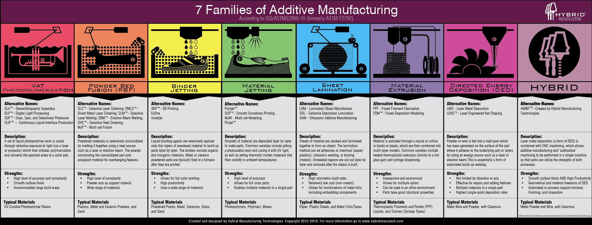

Naam: Jan-Willem Arendsen, Datum: 25-11-2020

Bij Vatpolymerisatieprocessen wordt er een laag fotopolymeer selectief beschijnt, zodat deze lokaal uithardt. Hierbij zijn er twee mogelijkheden. Ten eerste kan een vat worden gevuld met vloeistof waar een bouwplatform in wordt gezakt, dat vervolgens vanaf de bovenkant wordt belicht. Bij de tweede variant wordt er een ondiep vat gebruikt met een doorzichtige bodem, die vanaf de onderkant wordt belicht. Daarnaast zijn er twee belangrijke methodes voor de belichting. Er kan gekozen worden voor een laserbron die iedere pixel individueel belicht. Ook zijn er systemen die gebruikmaken van een beamer en zo een hele laag in één keer belichten (Kals, et al., 2018).
Machines die gebruikt worden voor het maken van grote producten, maken gebruik van een bouwplatform dat in het bed zakt, met een laserbelichting van boven. Dit wordt ook wel SLA (stereolithography) genoemd. Bij kleine bouwvolumes wordt vaak een bouwplatform die omhoog beweegt gebruikt, die vanaf de onderkant belicht wordt met behulp van een beamer. Dit wordt ook wel DLP (digital light processing) genoemd (Kals, et al., 2018).
Bij lijmjetprocessen (binder jetting technologies) wordt er een nieuwe laag aangebracht door poeder met lijm. Lijmjetprocessen hebben vaak een bak met poeder met een of meerdere voorraadcontainers. De lagen worden aangebracht door de bodem van de bouwbak een laag te laten zakken. Vervolgens wordt er samen met een roller of mens een nieuwe laag poeder uit de voorraadcontainers opgebracht. Daarna wordt er een doorsnede van het product in de poederlaag aangebracht door selectief lijm op te toplaag aan te brengen door inktjettechnologie. De sterkte van dit product wordt bepaald door de sterkte van de lijm. Door aan de lijm kleurstoffen toe te voegen, kan de kleur bepaald worden. Hierdoor kan op een goedkope manier een prototype in kleur gemaakt worden (Kals, et al., 2018).
Over het algemeen lijken de poederbedfusiemachines op die van het lijmjetten. Alleen zijn bij poederbedfusieprocessen (powderbed fusion processes) de inktjetkop met lijm vervangen door een gefocuste energiebron, een elektronenbundel of een laser. Door deze energiebron wordt er energie in de poederkorrels ingebracht, zodat deze selectief aan elkaar worden gesmolten of gesinterd (Kals, et al., 2018).
Bij sinteren, ook wel SLS (selectieve laser sintering) genoemd, worden de korrels aan elkaar verbonden, doordat atomen over de korrelgrens in elkaar doordringen, waardoor voor een vaste verbinding tussen de korrels gezorgd wordt. De originele korrelvorm blijft hierbij in stand. Bij sinteren blijft er sprake van ruimte tussen de korrels, waardoor de producten poreus zijn. Sinteren is een geschikte methode voor materialen met een hoge smelttemperatuur of metaallegeringen waarvan de smelttemperaturen van de componenten ver uit elkaar liggen. Daarnaast zijn er ook onderdelen waarbij porositeit juist een voordeel is (Kals, et al., 2018).
Bij smelten worden de korrels tot boven de smelttemperatuur verwarmd, waardoor de korrelgrenzen volledig verdwijnen. De warmtebronnen die bij smelten gebruikt kunnen worden is een laser (SLM, selective laser melting) of een elektronenbundel (EBM, electron beam melting). Vooral thermoplastische kunststoffen en zuivere metalen zijn geschikt voor SLM en EBM, omdat de korrels volledig moeten smelten. De poeders worden voorverwarmd tot vlak onder verwerkingstemperatuur, om ervoor te zorgen dat de energiebron maar een klein beetje extra energie hoeft te leveren. Dit betekent wel dat bij het printproces rekening gehouden moet worden met een lange opwarm- en afkoeltijd (Kals, et al., 2018).
Dit proces is voor metalen, het selectief smelten van metaalpoeders, het meest gebruikte proces. Met dit proces kunnen gedetailleerde en complexe metalen producten gemaakt worden, die een hoge stijfheid en sterkte combineren met een zeer lage porositeit. Na dit proces moet het product spanningsarm worden gegloeid en moet het product van de bouwplaat worden verwijderd. Als laatste moeten de functionele vlakken, waaraan eisen worden gesteld, nabewerkt worden (Kals, et al., 2018). Dit komt dus bij dit proces bij.
Materiaaljettechnieken (material jetting) staat bekend als het selectief deponeren van productmateriaal. Dit gebeurt vaak in druppelvorm, maar ook zijn er poeder en vloeistof-poedercombinaties mogelijk. Bij materiaaljetten is het mogelijk om verschillende soorten materiaal in één product te verwerken. De resolutie van het product wordt bepaald door de kleine druppels (Kals, et al., 2018).
Materiaaljetten wordt vooral toegepast bij producten waarbij kleine details en een goede oppervlaktekwaliteit belangrijk is. Er zijn twee interessante productieprocesvarianten binnen deze procesgroep commercieel aantrekkelijk, namelijk wasprinters en printers die gebruikmaken van fotopolymerisatiekunststoffen. Bij een wasprinter wordt er was gesmolten, die na het jetten gelijk weer afkoelt, waardoor deze gelijk stolt. Deze geprinte wasmodellen worden gebruikt om vervolgens door de verloren-wasmethode, complexe en gedetailleerde metalen eindproducten te maken (Kals, et al., 2018).
Fotopolymerisatiekunststoffen zijn vloeibare kunststoffen, voordat deze verwerkt worden. Deze kunststoffen bestaan uit monomeren en foto-initiators. Door met Uv-licht met de juiste golflengte te beschijnen, ontstaat er een kettingreactie die ervoor zorgt dat de monomeren onderling verbonden worden, waardoor het materiaal uithardt. Er kunnen veel verschillende kleuren en verschillende hardheden in een product verwerkt worden, bij het jetten van fotopolymerisatiekunststoffen (Kals, et al., 2018).
Vlakke-plaatprocessen (sheet lamination) wordt ook wel LOM (laminated object manufacturing) genoemd. Dit omvat alle processen waarbij plaatmateriaal als basismateriaal gebruikt wordt. Hierbij kan onder andere gedacht worden aan kunststof, metaal, keramiek, hout of papier. Het plaatmateriaal wordt in standaardafmetingen aangeleverd en wordt in de juiste vorm, plaat voor plaat aan elkaar verbonden. Vaak wordt eerst het nieuwe materiaal geplaatst en verbonden, voordat de productcontour aangebracht wordt. Er zijn verschillende varianten van vlakke-plaatprocessen (Kals, et al., 2018).
De eerste variant is een variant, waarbij standaard A4-papier als basis wordt gebruikt. Een stapel papier wordt in de printer geladen, selectief van lijm voorzien en vervolgens gestapeld. Een snijpotter brengt laag voor laag de contour van het object aan. Na het printen wordt het overtollige papier met de hand verwijderd. Op deze manier is het mogelijk om goedkoop, snel en in kleur een 3D-model te printen. De sterkte van dit model wordt bepaald door de sterkte van het papier en de lijm, vandaar dat deze modellen alleen gebruikt worden voor zichtmodellen en prototypen (Kals, et al., 2018).
De tweede variant is een vlakke-plaatproces, waarbij dunne metalen strips ultrasoon aan elkaar worden gelast. Doordat dit ultrasoon gelast wordt, worden de metalen niet gesmolten, maar in vaste toestand aan elkaar verbonden. Op deze manier kunnen ook materialen met verschillende smeltpunten aan elkaar verbonden worden. De productvorm wordt in de laag aangebracht door CNC-frezen (Kals, et al., 2018).
De laatste variant is een variant waarbij met inktjettechnologie het patroon van het eindproduct op een laag losse vezels wordt geprint. De lagen worden gestapeld, vervolgens samengeperst en ten slotte in een oven verbonden. Vervolgens wordt met behulp van een chemisch of mechanisch proces het overtollige materiaal verwijderd (Kals, et al., 2018).
Materiaalextrusieprocessen staan bekend door technieken die selectief materiaal deponeren door een spuitmond of extrusieopening. Om 3D-structuren te vormen met het gedeponeerde materiaal, moet het materiaal tijdens de depositie vloeibaar zijn. Ook moet het materiaal kort na de depositie voldoende stevig zijn, zodat de positie behouden wordt en dat de laag erna gedragen kan worden. Bij materiaalextrusie is FDM (fused deposition modelling) de bekendste procesvariant. Bij FDM wordt een thermoplastische kunststof filament gebruikt dat door een verwarmde spuitmond wordt gevoerd. Het materiaal wordt verweekt in de spuitmond, zodat het gevormd en gedeponeerd kan worden. FDM-machines kunnen verschillende soorten filament in één product toepassen. Op deze manier kunnen meerdere kleuren of materiaaltypen worden gecombineerd of kan er gekozen worden om één materiaaltype te gebruiken voor makkelijk te verwijderen steunstructuren (denk hierbij aan een op wateroplosbare filament). FDM-machines zijn ook zeer geschikt voor particulieren. Naast thermoplastische kunststoffen kunnen ook allerlei andere materialen met deze extrusietechnologie gevormd worden. Denk hierbij aan beton, metalen met een laag smeltpunt, metaalpoeders, deeg en chocolade (Kals, et al., 2018).
Gefocuste-energiedepositie (Directed Energy Deposition) omvat processen, waarbij metalen worden gesmolten op het moment van depositie. Door metaaldraad of metaalpoeder in de focus van de energie te brengen, wordt dit uitgevoerd. Dit wordt ook wel LENS (laser engineered net shaping) genoemd. Bij gefocuste-energiedepositie is het mogelijk om producten te printen met meerdere metaalsoorten. Daarnaast is de snelheid van productopbouw bij gefocuste-energiedepositie tien keer zo snel dan bij poederbedgebaseerde processen voor metalen. Een groot nadeel van Gefocuste-energiedepositie is de hoge oppervlakteruwheid na het printproces. Gefocuste-energiedepositie wordt voornamelijk gebruikt voor grotere metalen producten zonder kleine details (Kals, et al., 2018).
Bij hybride processen wordt 3D-printen gecombineerd met frezen, omdat de resulterende nauwkeurigheid en oppervlaktekwaliteit van ge3D-printeonderdelen vaak niet vergelijkbaar is met die van traditionele productieprocessen. Bij hybride processen vindt het produceren van de geometrie en het nabewerken op één machine plaats. Hierbij zijn er op dit moment twee versies. De eerste is gebaseerd op poederbedfusie. De tweede variant is gebaseerd op gefocuste-energiedepositie. Bij Poederbedfusieprocessen wordt het oppervlakte na een paar geproduceerde lagen na bewerkt. Dit resulteert in een verstoring van het poederbed (Kals, et al., 2018).
{kind=link}